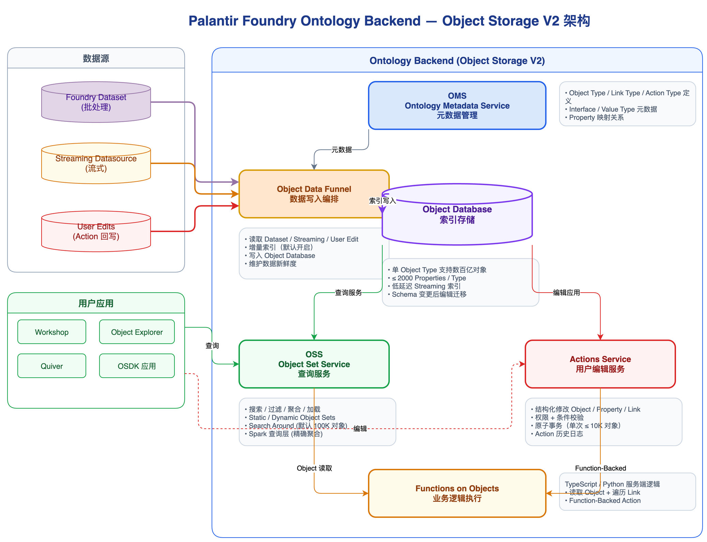

数据版本和血缘是治理闭环的基础设施
没有 Transaction、Branch、View 和自动注册的依赖关系，血缘、影响分析、重放和审计都无法形成统一能力。
Topic 04
Palantir 最大的平台壁垒，往往不在算子或引擎，而在 Dataset 版本、Lineage、Marking、Ontology 和 Writeback 共同组成的治理闭环。
Conclusions
没有 Transaction、Branch、View 和自动注册的依赖关系，血缘、影响分析、重放和审计都无法形成统一能力。
同一条依赖边在不同 branch 上可能解析到不同的 transaction/view，Lineage 必须能解释“这次到底读了什么”。
SyncRun 产出 raw transaction，BuildRun 读写 transaction range，Ontology 再把结果映射到业务对象。
Lineage Map
承载 Pipeline Builder、Code Repository、Ontology、Workshop 的逻辑/配置变更。
只是 Dataset transaction 指针，不支持像 Git 那样直接 merge 数据内容。
按 branch-aware graph 展示资源、build history、staleness 和 dataset-to-ontology link。
记录某次 SyncRun / BuildRun 实际读取哪个 branch、哪个 transaction/view/range，并产出哪个 transaction。
展示 Data Source、Dataset、Transform、Object Type 和应用之间的长期依赖关系，用于影响分析。
解释 Global Branch、Dataset Branch 和 fallback resolution 的差异，避免误判开发分支实际读写路径。
Mechanisms

Pipeline 输出 Dataset，经映射进入 Object Type；业务侧修改又可通过 Action / Writeback Dataset 回到数据链路，形成“分析结果可操作”的闭环。
选择 Global Branch 后可查看分支上的 Dataset、Ontology 和 link 状态；但图配置不会作为分支资源 merge 回 Main。
Build Your Own
血缘的主语不是任务，而是 Dataset、Branch、Transaction/View 和 Producer Run。每次读写都要绑定到具体版本，才能支持回放、审计和影响分析。
Pipeline 记录 input/output Dataset contract；Sync 记录外部源、配置版本、cursor/watermark、transaction type 和 output transaction。
BuildRun / SyncRun 必须落 run_input 和 run_output，尤其是 requested branch、resolved branch、transaction range 和 output transaction。
Dataset Branch 是 transaction 指针；把分支数据带回主线应通过 promote、copy 或 rebuild-to-target-branch 生成新的 transaction。
Dataset transaction、schema version、SyncRun / BuildRun 输入输出版本，支撑版本追溯和基础上下游查询。
声明式 I/O、branch/fallback resolution、staleness 和 schedule 集成，支撑分支视图和影响分析。
逐步扩展 SQL/低码列级血缘、schema impact、标签/权限传播、OpenLineage 和 Ontology / Writeback。
Implications
Sources